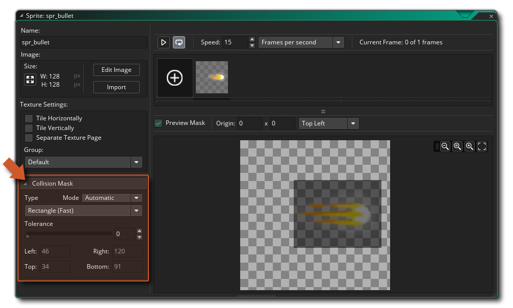
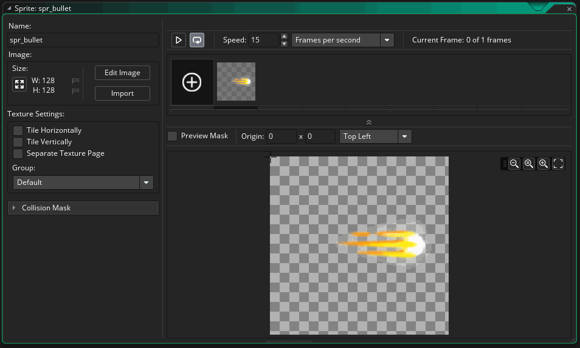
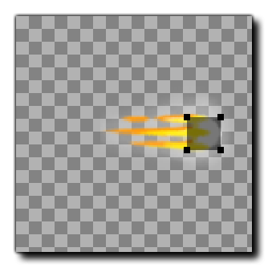
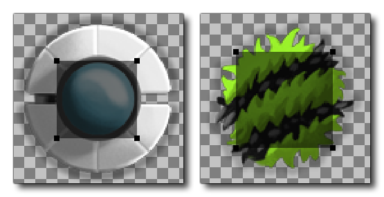

While you've been testing your game, you may have noticed that the bullets don't often actually appear to hit the enemies when they disappear... yet the hit is being registered, and the bullet is disappearing and the enemy "hp" is being affected. What's happening?
To answer that we need to back to the Sprite Editor and explain another of its features - the ability to set up a collision mask. So, open up the bullet sprite now and click the section labelled Collision Mask: 
This section of the sprite editor permits you to define the area of the sprite that will be used to detect collisions, where a collision is defined as when two collision masks overlap at any point. By default, this will be set to Automatic, and you can see that in the preview window GameMaker Studio 2 has added a darker rectangle to show the area of the sprite that will be used for collisions by default. However we want to edit this as it is too large for what we need, which means you have to click the Mode button and select Manual. This will open up the options to edit the collision mask, permitting you to change the mask shape and set the values required for the area it covers. We are going to use the rectangular collision mask, but we need to change it's size. We could do this by changing the values shown for left, top, right and bottom, however you can edit the collision mask directly in the preview window by simply dragging the little box "handles" around:

What we want is to achieve is a collision mask that covers only the "head" of the bullet so that the rest won't register, something like this: 
You now need to open the other two sprites (for the player and for the enemy) and edit their collision masks too, as in the image shown below: 
Note that we have left the player collision mask a fair bit smaller than the sprite itself. In most arcade games, the collision mask is kept smaller than the sprite to give the player a bit more room for error, and in this game we will do the same.